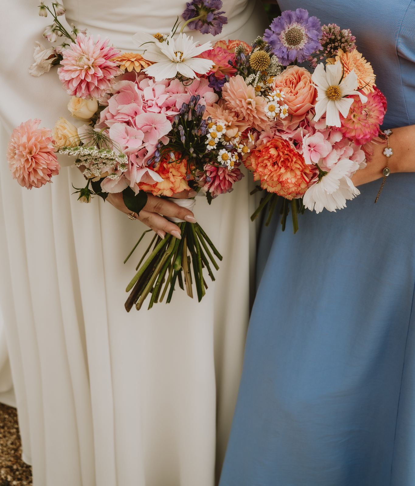
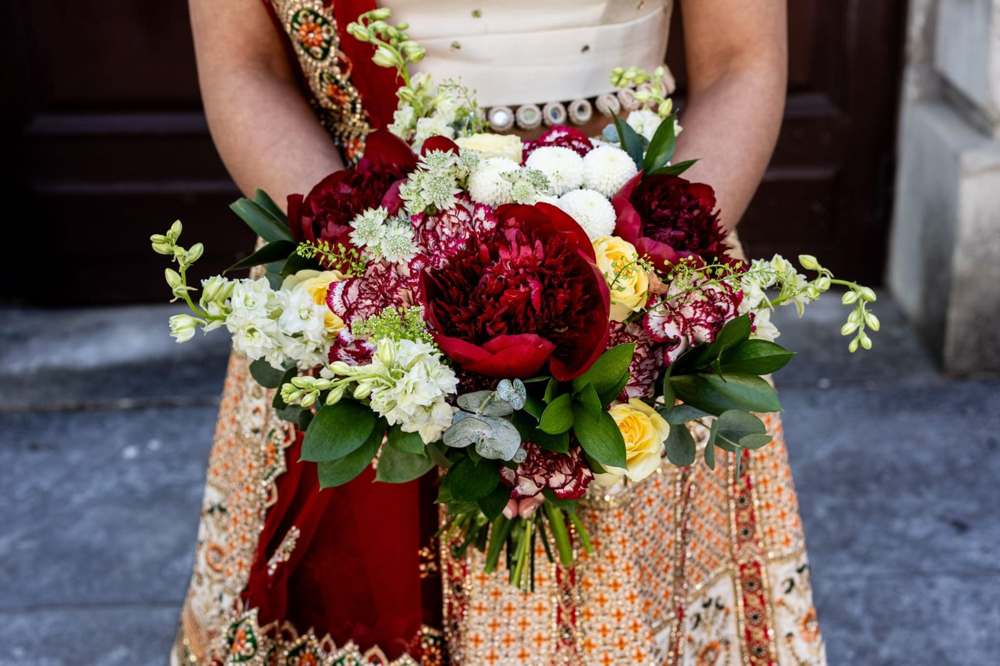
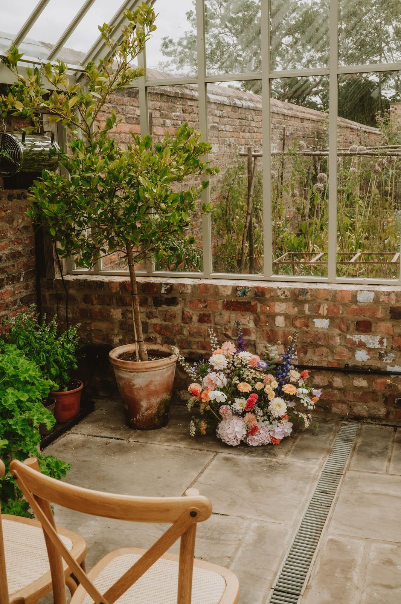
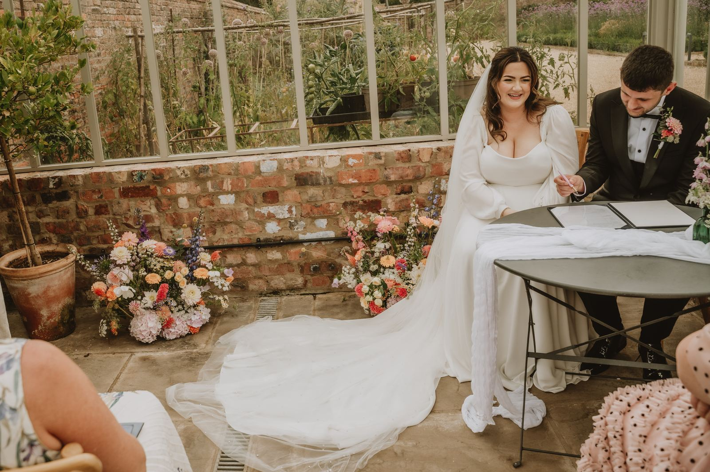
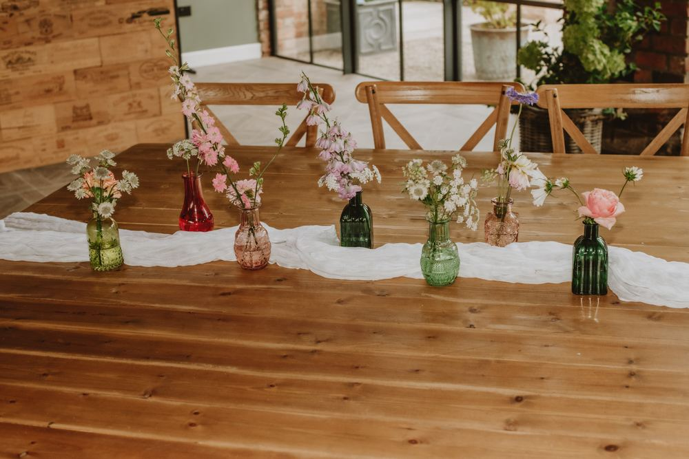
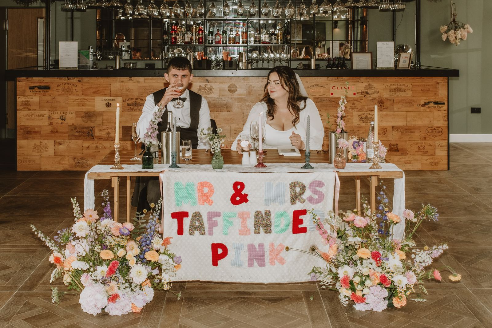

The bouquets
From soft, colourful garden bouquets to deep reds and peonies.
Portfolio
Weddings, events and commercial spaces, from North Yorkshire and beyond.
Use the filters above to see weddings, events or commercial work.
Details


From soft, colourful garden bouquets to deep reds and peonies.


Urns and floor arrangements framing the aisle and the signing table.


Bud vases, candles and posies along every table, with flowers framing the top table.
Collaborations
Kind words
[Client name]★★★★★“[Paste a real client review here.]”
[Client name]★★★★★“[Paste a second real client review here.]”
[Client name]★★★★★“[Paste a third real client review here.]”
Ask whether I can create something similar for your day.
Send an enquiry